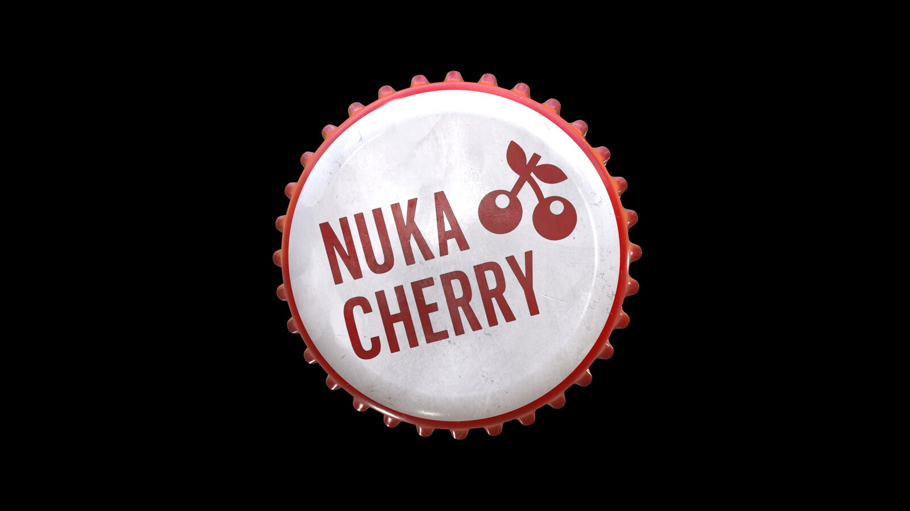

Nuka Cherry Recipe

How to Make Nuka Cherry
Ingredients
- 2 16-ounce bottles Coca-Cola "Cherry"
- 2 16-ounce cans Monster "Ultra Black" energy drink
Steps
- Measure Coca-Cola into a punch bowl. Pour 2 16-ounce bottles of Coca-Cola "Cherry" into a punch bowl/serving pitcher. Use chilled Coca-Cola "Cherry" to keep the drinks cold.
- Add the Monster to the bowl and stir the Nuka Cola Cherry. Pour 2 16-ounce cans of Monster "Ultra Black" into the punch bowl/serving pitcher. Pour slowly to prevent the soda from fizzing up a lot. Take a long spoon and slowly stir the mixture until the liquids are combined.
- Serve the Nuka Cherry. Set out serving glasses so guests can help themselves to this fizzy drink. If you'd like to put the cola in bottles, use a funnel to pour in into the bottles and serve them before the Nuka Cherry loses its carbonation.
- If you choose to bottle the Nuka Cherry, consider setting out some old Nuka Cola Caps.